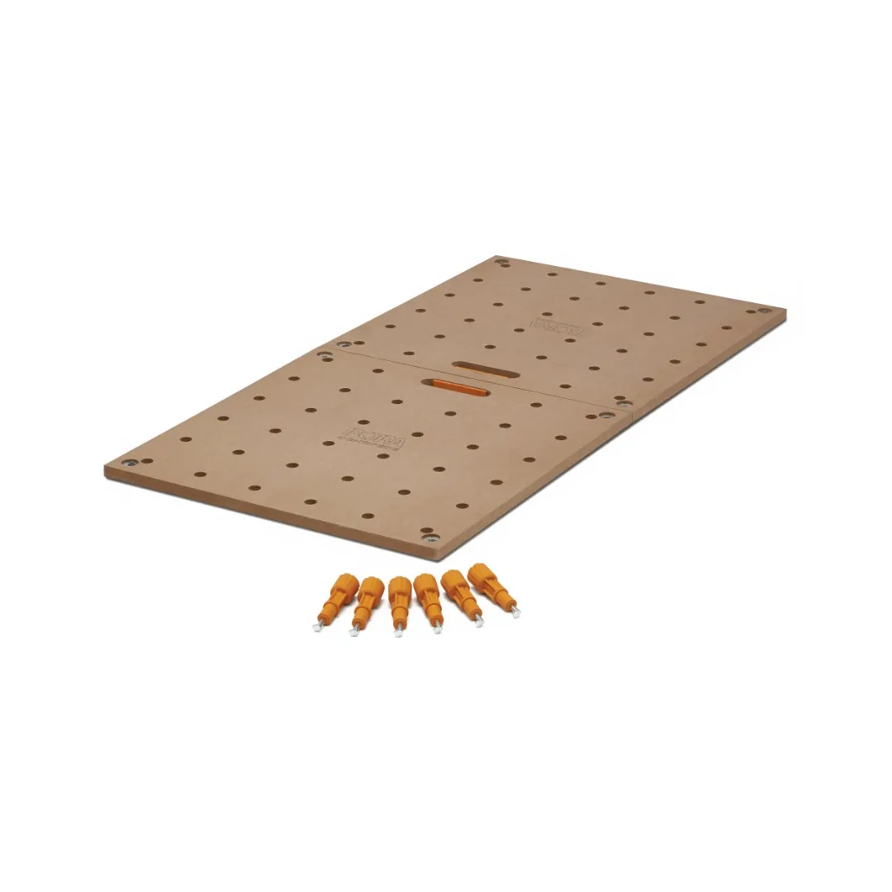
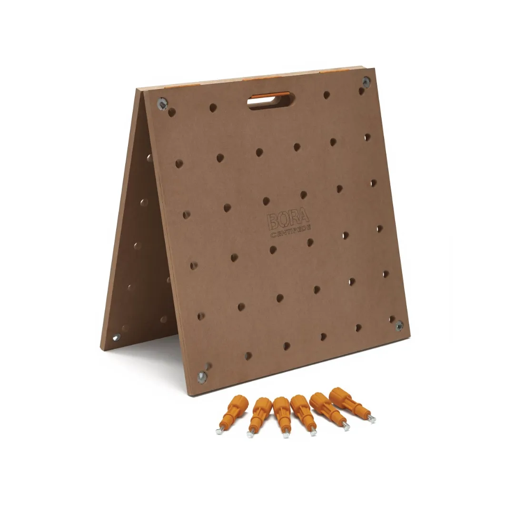
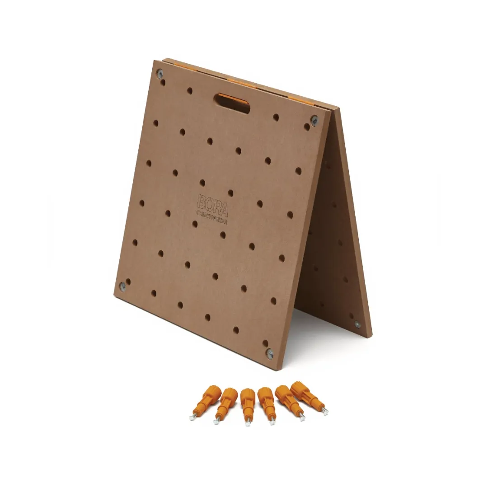
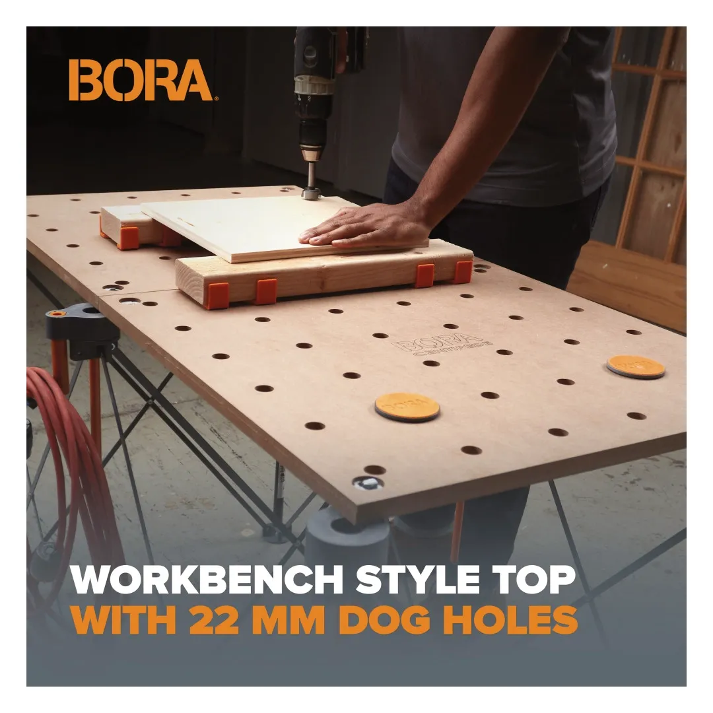
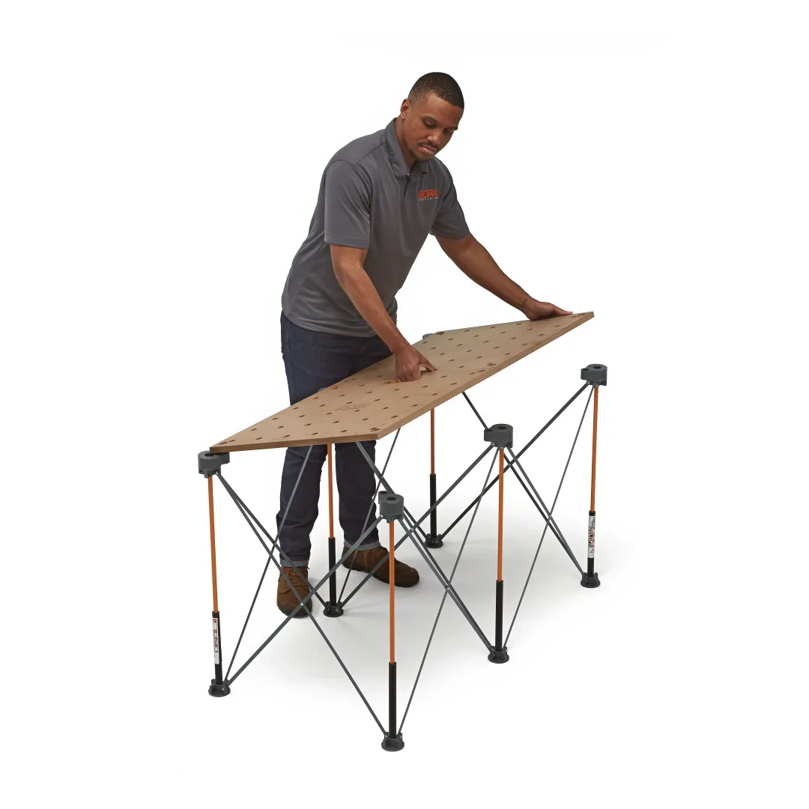
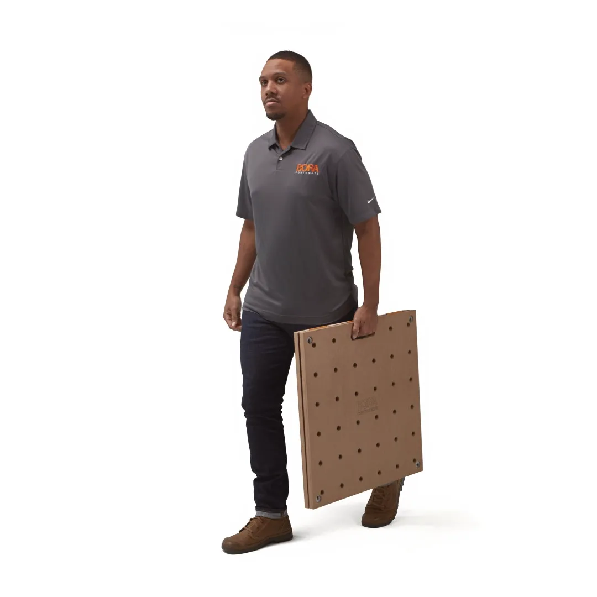

022CK22TM






The BORA Centipede Table Top with 20mm dog holes provides a stable and practical work surface for use with Centipede workstands. The evenly spaced holes allow for flexible clamping and secure positioning of materials during a range of tasks.
Key Features
The tabletop is designed for simple setup and reliable performance. It allows you to create a functional workbench with added clamping flexibility, making it suitable for more controlled and accurate work.
| Size: | 610mm x 1220mm |
| Thickness: | 18mm |
| Dog hole size: | 20mm |
| Load capacity: | 907kg |
| Design: | Hinged foldable panels |
| Compatibility: | BORA Centipede workstands (CK6S, CK9S, CK15S) |